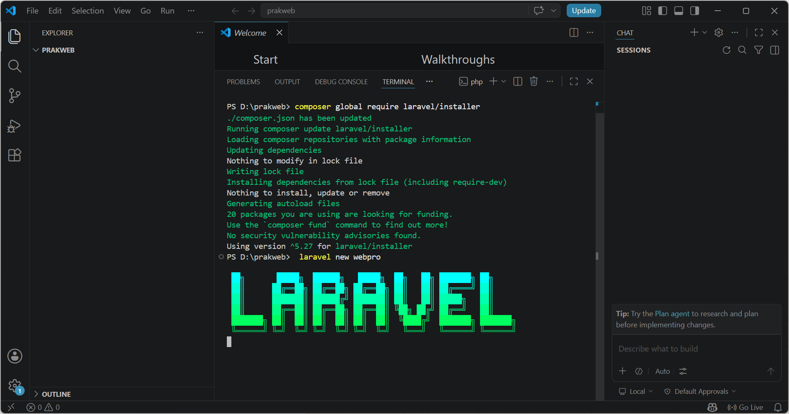
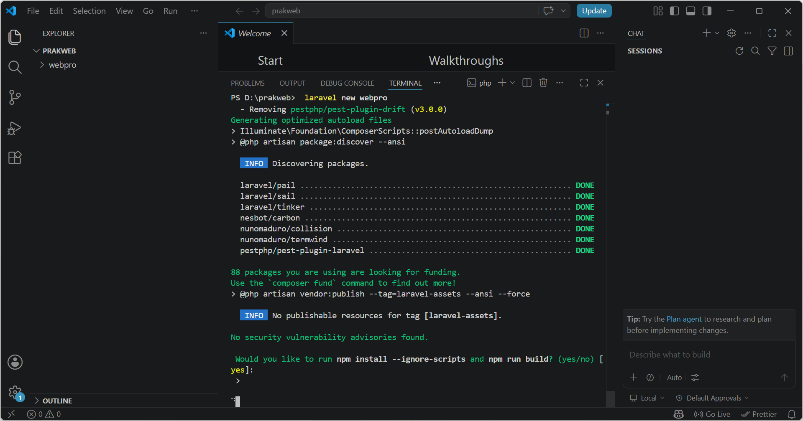
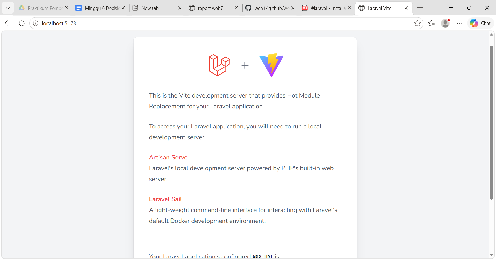

Pendahuluan
Laravel merupakan salah satu framework PHP yang populer dan dikembangkan oleh Taylor Otwell. Laravel adalah framework open source yang digunakan untuk mengembangkan aplikasi berbasis web dengan arsitektur MVC (Model - View - Controller). Framework ini dirancang untuk mempermudah proses pengembangan aplikasi web modern dengan sintaks yang elegan, sederhana, dan mudah dipahami.
Laravel menyediakan berbagai fitur yang membantu developer dalam membangun aplikasi web seperti Eloquent ORM, Blade Template Engine, routing, middleware, validasi form, dan Artisan CLI. Dengan berbagai fitur tersebut Laravel menjadi salah satu framework yang banyak digunakan dalam pengembangan aplikasi web modern.
Tujuan Praktikum
- Memahami konsep dasar framework Laravel
- Melakukan instalasi Laravel dan tools pendukung
- Membuat project Laravel baru
- Menjalankan Laravel menggunakan artisan
- Memahami konsep MVC Laravel
Langkah-Langkah Praktikum
1. Install XAMPP
XAMPP merupakan software yang digunakan sebagai web server lokal. Di dalam XAMPP sudah tersedia Apache, PHP, dan PhpMyAdmin yang digunakan untuk menjalankan project Laravel pada komputer lokal. Setelah proses instalasi selesai, folder project biasanya berada pada direktori C:\xampp\htdocs.
2. Install Composer
Composer merupakan package manager PHP yang digunakan untuk mengelola dependency atau package yang dibutuhkan Laravel. Composer digunakan saat proses instalasi framework Laravel maupun package tambahan lainnya.

3. Install NPM
NPM (Node Package Manager) digunakan untuk mengelola package JavaScript pada Laravel. NPM biasanya digunakan untuk menjalankan Vite, Bootstrap, serta dependency frontend lainnya agar tampilan aplikasi Laravel dapat berjalan dengan baik.
npm install npm run dev

4. Membuat Project Laravel
Setelah Composer berhasil diinstall, langkah selanjutnya yaitu membuat project Laravel baru melalui terminal atau CMD dengan menggunakan perintah berikut.
composer create-project laravel/laravel belajar-laravel --prefer-dist

5. Menjalankan Laravel
Setelah project berhasil dibuat, masuk ke folder project Laravel kemudian jalankan server bawaan Laravel menggunakan perintah artisan serve agar project dapat diakses melalui browser.
cd belajar-laravel php artisan serve

6. Membuka Laravel di Browser
Setelah server Laravel berhasil dijalankan, project dapat diakses melalui browser dengan alamat berikut.
http://127.0.0.1:8000
Jika berhasil, maka halaman default Laravel akan tampil pada browser.
7. Konsep MVC Laravel
Laravel menggunakan konsep MVC (Model View Controller). Model digunakan untuk mengelola data dan database, View digunakan untuk membuat tampilan antarmuka aplikasi, sedangkan Controller digunakan untuk menangani request dan response serta menghubungkan Model dengan View.
php artisan make:model NamaModel php artisan make:controller NamaController
Alur kerja MVC pada Laravel yaitu user mengirim request ke Controller, kemudian Controller memproses data melalui Model yang terhubung ke database, lalu hasilnya ditampilkan kembali kepada user melalui View.
Hasil Praktikum
Project Laravel berhasil dibuat dan dijalankan pada browser menggunakan localhost Laravel. Halaman welcome Laravel berhasil tampil menandakan konfigurasi framework berjalan dengan baik.

Kesimpulan
Berdasarkan praktikum yang telah dilakukan, dapat disimpulkan bahwa Laravel merupakan framework PHP yang membantu proses pengembangan aplikasi web karena memiliki struktur yang rapi dan fitur yang lengkap. Melalui praktikum ini berhasil dilakukan instalasi Laravel beserta tools pendukung seperti XAMPP, Composer, dan NPM serta berhasil membuat dan menjalankan project Laravel menggunakan perintah artisan serve. Praktikum ini juga memberikan pemahaman dasar mengenai konsep MVC pada framework Laravel.
Kembali